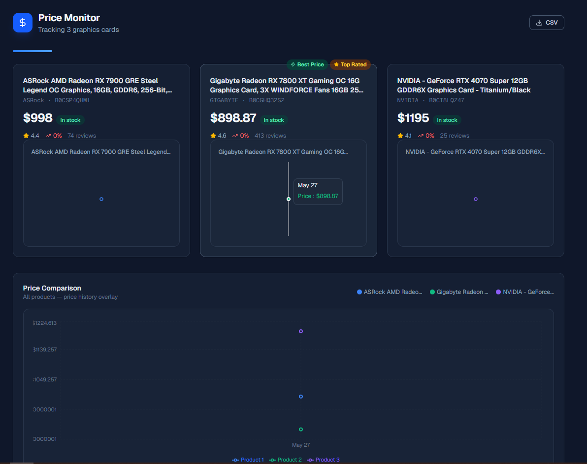
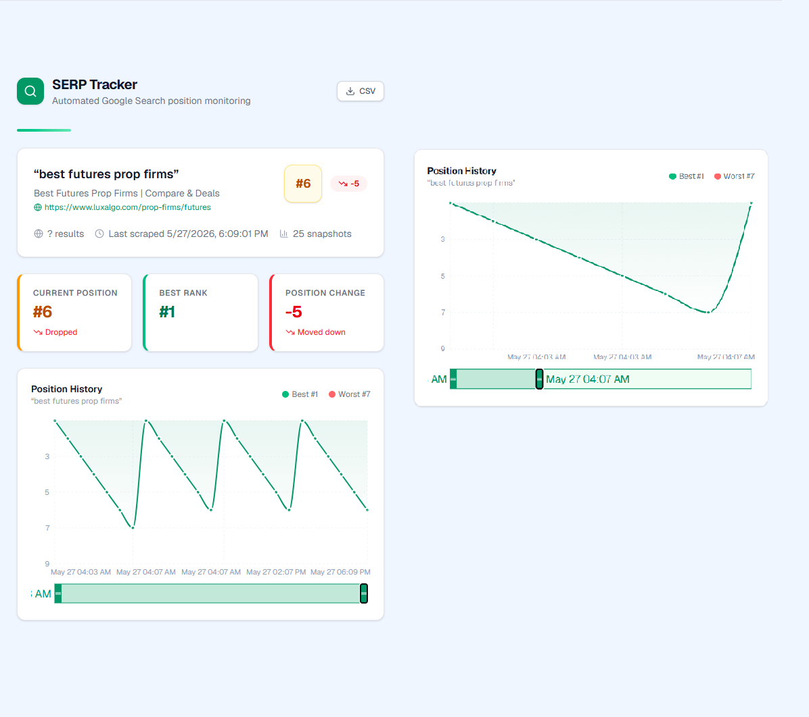
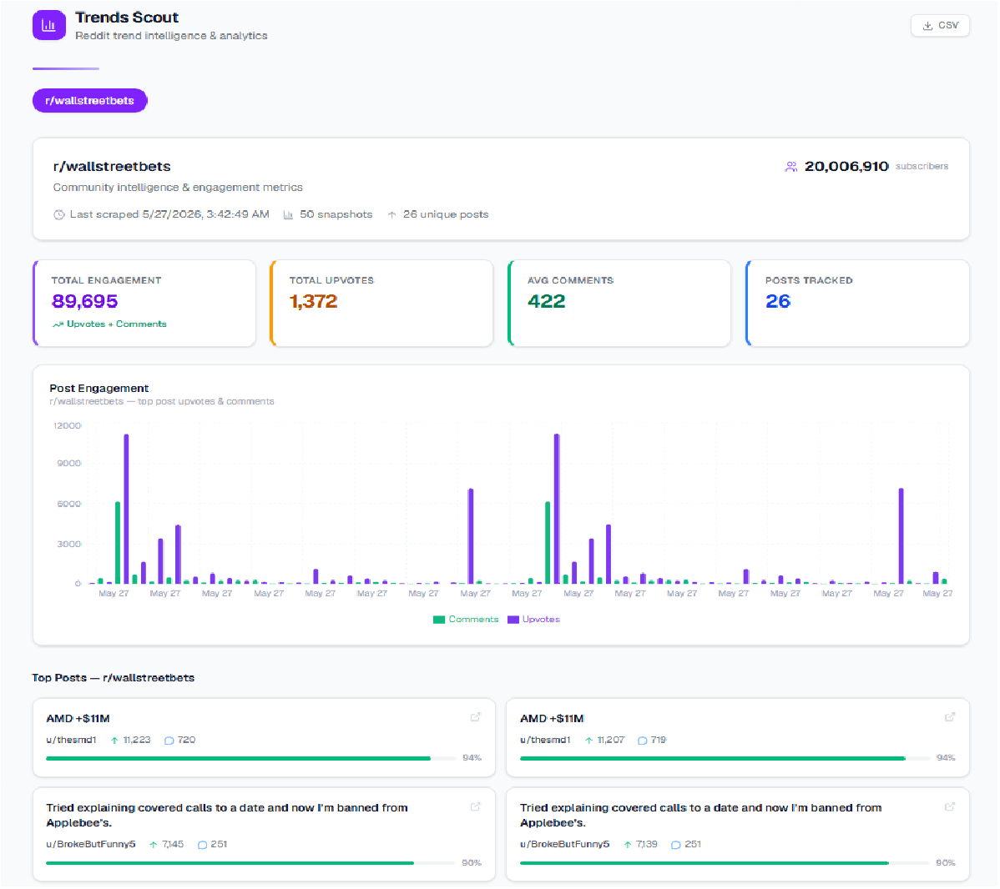

Designing systems that collect, process and visualize real-time data through automated workflows and interactive dashboards.
Three real-world prototypes showcasing automated data collection, processing and interactive visualization.

Real-time price monitoring dashboard for tracking GPU listings, price changes and historical trends automatically.
Designed around reliable scraping workflows, structured historical storage and responsive dashboard visualization for continuously changing product data.

Automated search ranking dashboard designed to monitor keyword positions, detect ranking changes and visualize search performance over time.
Built to handle dynamic search result structures, automated query workflows and efficient visualization of continuously changing ranking data.

Community trend monitoring dashboard designed to track engagement patterns, top-performing posts and activity across online communities.
Built around automated data collection, engagement aggregation and responsive visualization workflows for continuously changing community activity.
A practical stack focused on automation, data workflows and visualization.